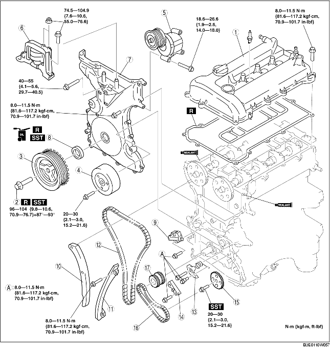

1. Remove the following parts.
2. Disconnect the negative battery cable.
3. Remove the following parts.
4. Remove in the order indicated in the table.
5. Install in the reverse order of removal.
6. Start the engine.
7. Inspect the following and adjust if necessary.

.
|
1
|
Cylinder head cover
|
|
2
|
Crankshaft pulley lock bolt
|
|
3
|
Crankshaft pulley
|
|
4
|
Water pump pulley
|
|
5
|
Drive belt auto tensioner
|
|
6
|
No.3 engine mount rubber and No.3 engine joint bracket
|
|
7
|
Engine front cover
|
|
8
|
Front oil seal
|
|
9
|
Chain tensioner
(See Chain Tensioner Removal Note.)
|
|
10
|
Tensioner arm
|
|
11
|
Chain guide
|
|
12
|
Timing chain
|
|
13
|
Oil pump chain tensioner
|
|
14
|
Oil pump chain guide
|
|
15
|
Oil pump sprocket
|
|
16
|
Oil pump chain
|
|
17
|
Crankshaft sprocket
|
1. Remove the cylinder block lower blind plug.
2. Install the SST.
3. Turn the crankshaft clockwise the crankshaft is in the No.1 cylinder TDC position (until the balance weight is attached to the SST).
4. Hold the crankshaft pulley using the SSTs.
1. Install the suitable wood slabs between the front fender panel and apron reinforcement upper.
2. Support the engine using the SST.
1. Remove the oil seal using a screwdriver as shown in the figure.
1. Unlock the chain tensioner ratchet using a suitable screw driver or equivalent tool.
2. Slowly compress the tensioner piston.
3. Hold the tensioner piston using a 1.5 mm {0.059 in} wire or paper clip.
1. Hold the oil pump sprocket using the SST.
1. Hold the oil pump sprocket using the SST.
1. Install the SST to the camshaft as shown in the figure.
2. Install the timing chain.
3. Remove the retaining wire or paper clip from the auto tensioner to apply tension to the timing chain.
1. Apply silicone sealant to the engine front cover as shown in the figure.
2. Install the engine front cover bolts in the order shown in the figure.
|
Bolt No.
|
Tightening torque
|
|---|---|
|
1-18
|
8.0-11.5 N·m {81.6-117.2 kgf·cm, 70.9-101.7 in·lbf} |
|
19-22
|
40-55 N·m {4.1-5.6 kgf·m, 29.7-40.5 ft·lbf} |
|
23
|
20-30 N·m {2.1-3.0 kgf·m, 14.8-22.1 ft·lbf} |
1. Apply clean engine oil to the oil seal.
2. Push the oil seal slightly in by hand.
3. Compress the oil seal using the SST and a hammer.
1. Tighten the stud bolt of the No.3 engine mount bracket.
2. Hand-tighten the No.3 engine mount rubber and No.3 engine mount bracket.
3. Tighten the bolts and nuts in the order as shown in the figure.
1. Install the SST to the camshaft as shown in the figure.
2. Install the M6 x 1.0 bolt in by hand.
3. Turn the crankshaft clockwise until the crankshaft is in the No.1 cylinder TDC position (until the balance weight is attached to the SST).
4. Hold the crankshaft pulley using the SST.
5. Tighten the crankshaft pulley lock bolt in the order shown with the following 2 steps using the SST (49 D032 316).
6. Remove the M6 x 1.0 bolt.
7. Remove the SST from the camshaft.
8. Remove the SST from the cylinder block lower blind plug.
9. Rotate the crankshaft clockwise two turns until the TDC position.
10. Install the cylinder block lower blind plug.
1. Apply silicone sealant to the mating faces as shown in the figure.
2. Install the cylinder head cover with a new gasket.
3. Tighten the bolts in the order shown in the figure.